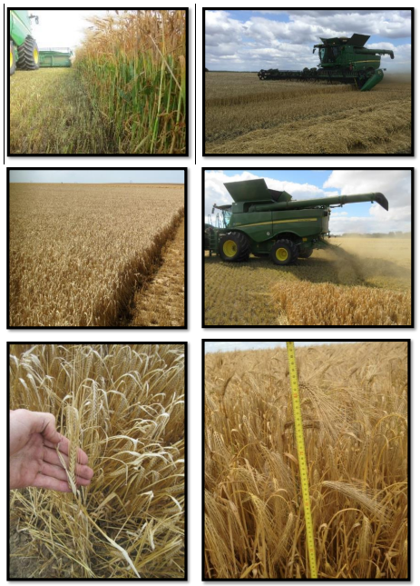

Conseils et astuces
Pertes de récolte
Lors de la récolte de l'orge, les grains piégés dans la couche de menue paille sur la grille à otons ont de “fortes chances” d’être perdus, car le grain moins lisse que le blé reste bloqué dans la menue paille. Un battage correct permet d'éviter cela.
Déterminer l’origine des pertes est essentiel pour prendre les mesures adéquates (Pertes au niveau de l'unité de récolte, des organes de battage, du caisson de nettoyage ou des pertes d‘avant moisson)
La meilleure façon de vérifier si le temps de battage est suffisant est de faire un andain et de rechercher des grains non battus.
Conditions de récolte
Le type de culture et les conditions ont une influence considérable sur la productivité et les réglages de la machine. Bien les évaluer avant de commencer la récolte. Pour l'orge en particulier. La capacité de battage, la rigidité de la paille et sa teneur en humidité ont un impact important sur les réglages de la machine.
Une paille verte et humide rend le battage plus difficile.
La teneur en humidité de la plante augmente de haut en bas de sorte que la hauteur de chaumes a un impact important sur le débit de céréales.
Le volume de paille qui passe par la moissonneuse-batteuse a une influence considérable sur la productivité. Le rapport céréales/matière autre que grain, a un impact très important sur les performances de récolte.
Réglages
Les variétés difficiles à battre exigent une configuration agressive des organes de battage, avec par exemple des écartements de contre-batteur pouvant descendre jusqu'à 5mm, des contrebatteurs à petit fil et des plaques d’obturation. Si les épis d'orge ne sont pas complètement battus ou si les barbes restent sur le grain, le caisson de nettoyage ne peut pas fonctionner efficacement.
Les réglages faits en cabines sont précis uniquement si les calibrations sont correctes. Contrôler fréquemment que les “valeurs cabines” correspondent bien aux valeurs réelles (ex: ouverture grille otons…)
Dans des conditions de faible rendement, des largeurs d'unité de récolte et des vitesses de déplacement plus importantes permettent de maintenir la machine "chargée" pour permettre le battage.
De la paille très sèche et cassante peut entraîner une surcharge du caisson de nettoyage. Pour limiter ce problème :
- Montez des plaques d’obturation.
- Agrandissez l'écartement du contre-batteur.
- Ralentissez le rotor à un régime ou le battage est effectué. (min. 800 tr/min)
Assurez-vous que la répartition de la matière est uniforme sur le caisson de nettoyage. C'est primordial.
Afin d'évaluer ceci, effectuez un STOP de la machine pendant la récolte
Remarque : Pour la procédure d’arrêt, demandez conseil à votre concessionaire.
Pour équilibrer la répartion, des ajustements peuvent être réalisés au niveau des diviseurs des vis d'alimentation et des couvercles peuvent être installés sur les grilles de separation du contrebatteur.
